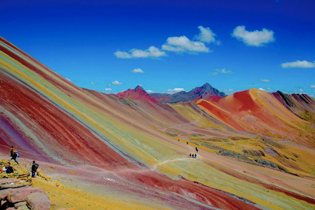
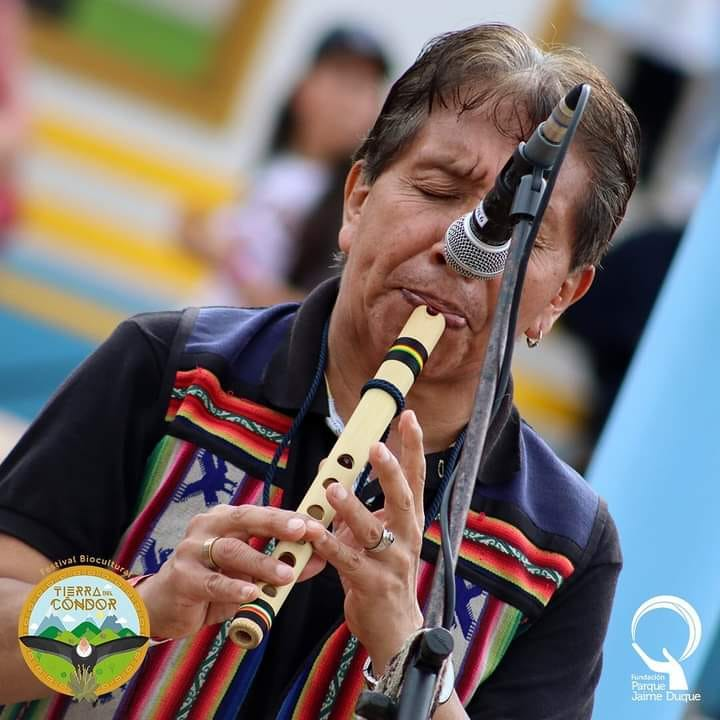
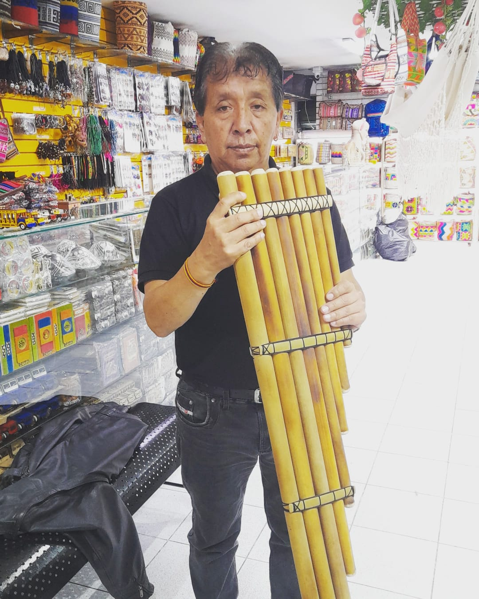
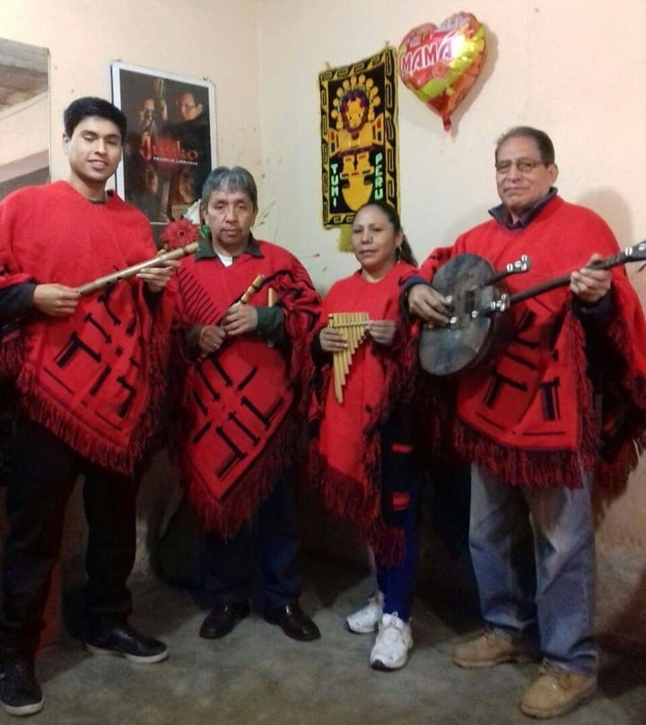

De Los Andes Para el Mundo
Wayra Valentín
Inicio
Biografía
Música Andina
Tienda
Hola Soy Juan carlos Canchachí. Mis amigos me conocen como Wayra Valentín. Soy músico, profesor y hago instrumentos.
Bienvenidx a mi web Tributo.

Presentaciones musicales en vivo

Fabricación de Intrumentos

Clases personalizadas
Trikay